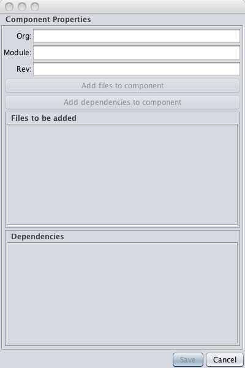
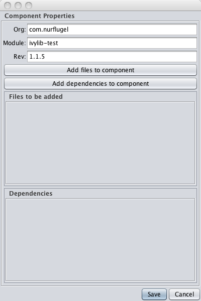
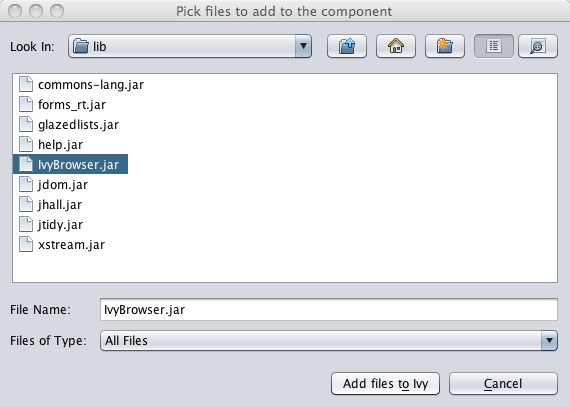
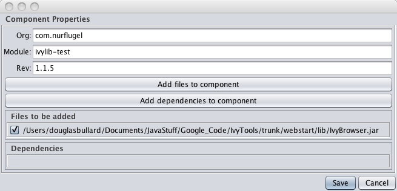
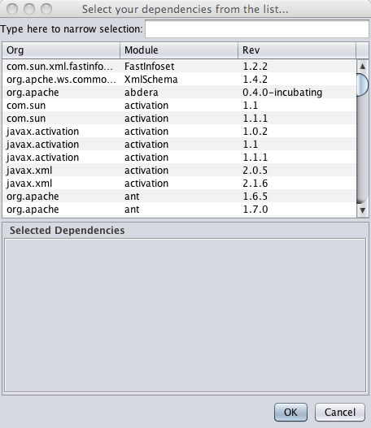
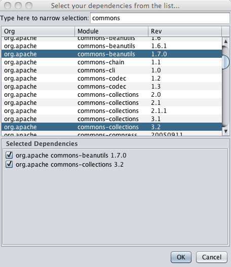
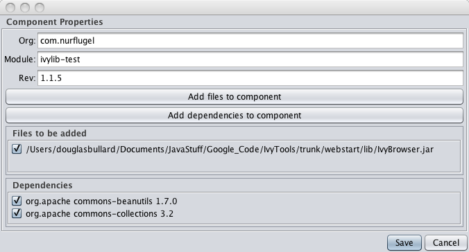
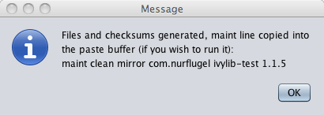

Ivy Builder
Using Ivy Builder
If you fired up the program, you should see the following:The first time you run the app, you will see "not selected yet" for the the location of the Ivy repository. For the program to work properly, you need to tell it where the Ivy repository is on this machine.
Unlike the IvyBrowser tool (which works by scanning the repository over HTTP), we need to insert things into it, so we need full access to the repository. In my case, that means a checkout of the repository onto my local box.
If you haven't specified the repository location, the "Add new component" button will be disabled, and you can't proceed. So, click on the "Select Ivy Repository" button, and select the "repository" directory which is the root of the Ivy repository. Now the fun begins!
Adding a new Component
This is what it's all about. Click on the "Add new component" button, and you'll get the component properties dialog:

Enter the values for the org, module, and revision you're going to add:

Now it's time to select which files go into this library. You want to have all version numbers stripped off of your libraries - if you've downloadded commons-lang-3.2.jar, make sure it's called commons-lang.jar. The version numbers are specified in the rev textbox.
Click on the "Add files to component" button. You can select jars, zip, text, pretty much anything with an extension (Ivy really doesn't like files with no extension). Jars/zips with -src, -source, or -sources after the main name are assumed to be source jars, jars/zips with -javadoc or -javadocs are assumed to be javadocs. So, in the previous example, if you selected commons-lang.jar, commons-lang-src.jar, and commons-lang-javadocs.jar, all three would be imported into Ivy and assumed to be linked.
In this example, we're just going to pick "ImageBrowser.jar"

We see that the jar we've selected has been added to the dialog. You can click the "Add files to component" button as many times as you want to keep adding stuff (sometimes source jars or docs are in
different directories, so you'd need more than one selection).

Notice that there is a checkbox next to the selection. If you uncheck this, the file won't be added. This is so if you are grabbing a bunch of files and make a mistake, you can just "undo' the bad item and leave the others selected.
Now it's time to add any dependencies, if any. If there are none, you just click the "Save" button. But, if you do need to add one or more dependencies, click on the "Add dependencies to component"
button. Another dialog comes up, showing the contents of the Ivy repository:

You can either scroll through the list, and select one or more items, but I find it much faster to type a filter in the text box, and narrow the selection down a bit:

Like the files, you can uncheck the checkboxes if you've grabbed a wrong one. Clicking on the "OK" button adds the dependencies to the list, and you can click on the "Add dependencies to component"
many times to add dependencies. I find it easier to group dependencies this way. Notice that main dialog also lets you unselect items you didn't really want.

Now, we're ready to click the "Save" button. Doing so saves the files to your repository, and generates the XML file and checksums. It also pastes a line into your paste buffer if you'd
like to run the "maint" script command to do that yourself (I generally don't - I like having more control over what's brought in)

That's it! All you need to do is commit if you're using Ivy over Subversion. If you're using vanilla HTTP, you're all done.
Wasn't that easy?